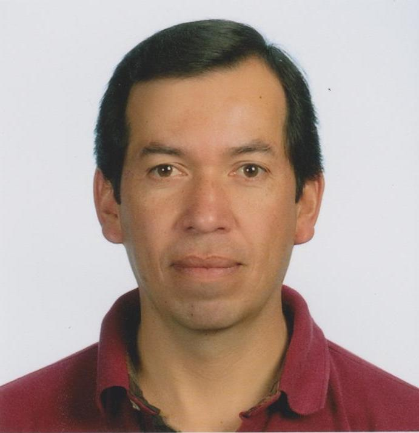

Artículo 3 EPS, expectativa y desarrollo

Autor: Ing. Jaime Manuel García Baldizón
Correo electrónico: jgarciab23@gmail.com
Fecha: 02 de mayo de 2019
3.1 EPS, expectativa y desarrollo
Concluir el pénsum de Ingeniería Civil fue por demás una gran experiencia, lograr vencer todas las barreras, todos los desafíos impuestos por los catedráticos, lograr cerrar cada área de estudios que parecía ser imposible; y para festejarlo nos lanzamos al tan ansiado “piletazo de ingeniería”, luego de los abrazos, felicitaciones y admiración de todos nuestros familiares y amigos, iniciamos el camino final hacia el Francisco Vela.
Elegí la opción EPS de 6 meses, porque me interesaba convivir directamente con las comunidades rurales y devolver, de alguna forma y mínimamente, la inversión realizada por la sociedad a través de la Universidad de San Carlos. Luego de presentar toda mi documentación fui aceptado para el desarrollo del EPS. Desde un principio mi asesor impulsó ánimo en el grupo y se empeñó por demostrar que éramos capaces de terminarlo en el tiempo asignado; que si en alguna área de estudio estábamos débiles, no importaba, ahora podíamos mejorar y complementar nuestros estudios.
No lograba comprender por qué desde un principio nuestro asesor se preocupaba por la posibilidad de no concluir el EPS, si tenía la capacidad y los estudios necesarios; además, significaba la meta final, la prioridad total y sin tener que asistir a las aulas, podía dedicarme el 100% al proyecto asignado.
Durante la investigación y presentación de proyectos para la aprobación por parte de la Dirección de EPS, fue posible conocer las necesidades de la comunidad, lograr la comunicación con los líderes comunales y comprender que falta desarrollar gran cantidad de infraestructura básica necesaria para garantizar salud, educación y desarrollo en el área rural.
Todo avanzaba bien y el tiempo para realizar esta parte concluyente de la carrera era el adecuado; cuando concluí el protocolo de desarrollo del trabajo profesional, empecé a investigar sobre documentos necesarios que no sabía dónde localizar; inició la primera recolección de firmas y la búsqueda de opinión de los catedráticos cuando no siempre aceptaban cualquier proyecto desde el primer intento y requerían que se investigara más; pero sin decirnos sobre qué, también pedían que abundáramos más sobre temas especializados no vistos en clase o que fueron percibidos de forma muy somera. Fue necesario visitarlos varias veces y pedir que se tomaran el tiempo para analizar los proyectos, hasta que por fin mi protocolo fue aprobado.
Inicié el proyecto formalmente, solicité equipo para realizar las medidas topográficas necesarias, estudios de suelos, entre otros, y solicitar el apoyo de las organizaciones comunales para llevar a cabo los estudios iniciales y el censo comunal. Con toda la información de campo recabada procedí a la creación y diseño de la obra que, a mi criterio, solucionaba el problema planteado.
En este punto inició mi temor, el comprender que estudiamos cursos solo para aprobar exámenes, que lo aprendido en clases no era suficiente para solucionar dudas, porque las obras que se tenían que desarrollar eran, por mucho, mayores y más complejas que las vistas en clase. No era posible ir a preguntar, porque cómo es posible que un estudiante que ya cerró pénsum esté preguntando aspectos básicos, y cuando me animaba a preguntar sobre algún tema muchas veces la respuesta fue: “eso lo debió haber visto en clase, ¿no se acuerda?”. Inició mi disertación enfatizando en que: “somos capaces de realizar este estudio”, el plan de acción que me propuse no abarca todos los temas necesarios, es posible que no tenga la capacidad de diseñar esta obra. Momentos muy difíciles que representaron el continuar o simplemente abandonar el EPS.
Fue solo el deseo de culminar y cumplir con el anhelo de llegar a ser un Ingeniero, que me hizo pedir ayuda; reconocer que no sabía el camino a seguir, que debía estudiar mucho para realizar las obras propuestas. Es aquí donde las recomendaciones iniciales de nuestro asesor tomaron fuerza, expresé a mi asesor mis dudas y temores; acepté mis deficiencias teóricas y el no saber cómo trazar un plan de acción específico, que sentía demasiada presión y no tenía la capacidad de lograrlo. Mi pensamiento era que me regresaría a estudiar todos los cursos nuevamente, pero necesitaba expresarlo y solicitar ayuda.
Sin embargo, mi asesor muy tranquilamente me indicó que era normal el temor, que todas las dudas e incapacidad que sentía eran parte del proceso de aprendizaje; que él podía ayudarme, pero para ello tenía que pedir y estar dispuesto a aceptar la ayuda. Debía entender que podía guiarme hacia la meta final, pero tenía que trabajar duro, estudiar mucho y comprometerme con la ruta por la cual debía transitar.
Fueron meses de trabajo duro y estudio constante; de investigar, consultar y entender muchos temas que fueron tratados en clase, pero sin la debida atención al respecto; sin embargo, el éxito no se hizo esperar. El día tan esperado finalmente llegó, y en una sesión de trabajo mi asesor dijo: “lo lograste, es hora de solicitar tu examen general privado”.
Es una satisfacción personal única, confrontar mis temores, aprender y reforzar todas las áreas de estudio aplicadas a un proyecto, entender que la universidad es una base fundamental, pero que debemos estar en constante capacitación y aprendizaje; por sobre todo, un aspecto muy importante fue la vivencia significante de apoyar a las comunidades tan necesitadas en nuestro país, compartir con ellos directamente y ser partícipe de una solución; recibir el reconocimiento y agradecimiento de la comunidad es sentir que valió la pena todo el esfuerzo; solo a través de esta experiencia pude aprender y entender el Ejercicio Profesional Supervisado.
Expreso mi agradecimiento a la Unidad de EPS por su solidaridad e interés en guiar a cada estudiante hacia la solución de sus proyectos; su esfuerzo por impulsar y animar en todo el proceso y en especial agradecer a mi asesor Ing. Juan Merck por su tiempo, respaldo y excelente guía. Solo me toca esperar que algún día logre ver edificada la obra proyectada y que la comunidad se beneficie a partir del estudio entregado.